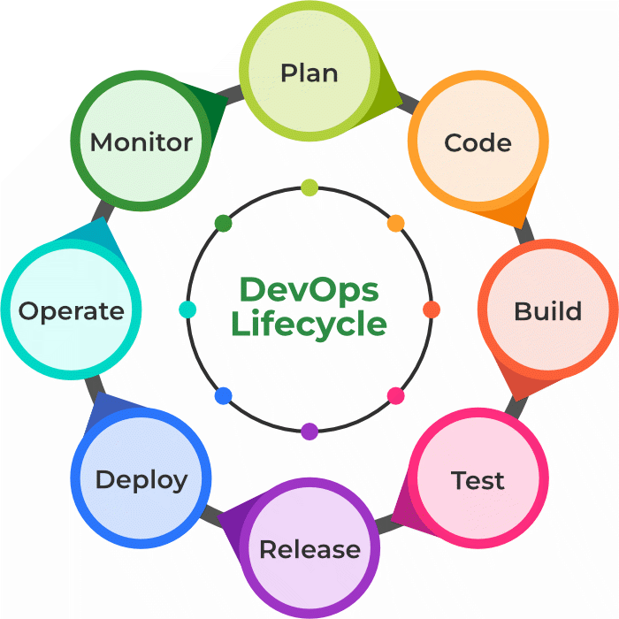

Full form of MEAN : MANGO DB, EXPRESS JS,ANGULAR JS, NODE JS
MEAN Stack is one of the most popular Technology Stack. It is used to develop a Full Stack Web Application. Although it is a Stack of different technologies, all of these are based on JavaScript language.MongoDB is a NoSQL database where each record is a document comprising of key-value pairs that are similar to JSON (JavaScript Object Notation) objects. Express is a Node.js framework. Rather than writing the code using Node.js and creating loads of Node modules, Express makes it simpler and easier to write the back-end code.React is a JavaScript library that is used for building user interfaces.AngularJS is a Javascript open-source front-end structural framework that is mainly used to develop single-page web applications(SPAs).Node.js provides a JavaScript Environment which allows the user to run their code on the server (outside the browser).
Full form of MERN : MANGO DB, EXPRESS JS,REACT JS, NODE JS
MERN Stack: MERN Stack is a Javascript Stack that is used for easier and faster deployment of full-stack web applications. It is designed to make the development process smoother and easier.Each of these 4 powerful technologies provides an end-to-end framework for the developers to work in and each of these technologies play a big part in the development of web applications.MongoDB is a NoSQL database where each record is a document comprising of key-value pairs that are similar to JSON (JavaScript Object Notation) objects. Express is a Node.js framework. Rather than writing the code using Node.js and creating loads of Node modules, Express makes it simpler and easier to write the back-end code.React is a JavaScript library that is used for building user interfaces. React is used for the development of single-page applications and mobile applications because of its ability to handle rapidly changing data. Node.js provides a JavaScript Environment which allows the user to run their code on the server (outside the browser).
DevOps is basically a combination of two words- Development and Operations. DevOps is a culture that implements the technology in order to promote collaboration between the developer team and the operations team to deploy code to production faster in an automated and repeatable way.The goal of DevOps is to increase an organization’s speed when it comes to delivering applications and services. Many companies have successfully implemented DevOps to enhance their user experience including Amazon, Netflix, etc.
